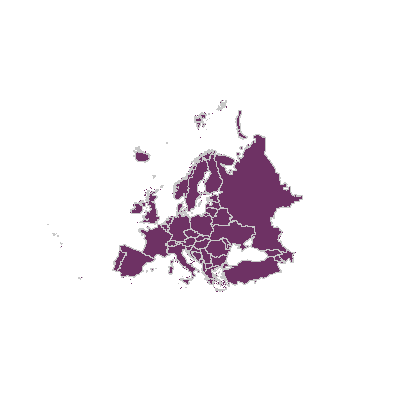

| Author: | Vinko Vrsalovic |
|---|---|
| Contact: | el at vinko.cl |
| Revision: | $Revision: 8365 $ |
| Date: | $Date: 2008-12-31 11:49:02 -0400 (Wed, 31 Dec 2008) $ |
| Last Updated: | 2005/12/12 |
The purpose of this document is to be a step by step explanation of the PHP MapScript with practical examples for each of them. It is assumed a basic knowledge of MAP and MapServer, and familiarity with the PHP (scripting) and HTML (markup) languages . This document was originally created for MapServer v4.0, but the examples still apply to more recent versions.
Let’s Begin...
Hello, kind reader. I am Tut, thank you for downloading me. I am sorry, but I am just a technical manual so I cannot answer any questions. The maintainer, a handsome, very nice and lazy guy according to what I saw from the other side of the screen, maybe will be able to answer your question(s). I am currently here to tell you about MapScript in its PHP incarnation. At my current age, I will be more useful to beginners than advanced users, even though I hope that some day I will be sufficiently old to be useful to advanced MapScript programmers.
Let’s hope I live long enough... sigh.
But enough with my personal problems, let myself begin. My duty is to familiarize you with MapScript, and in particular with PHP MapScript. When I end, you are expected to understand what MapScript is, and to be able to write applications to display and navigate that is, zooming and panning over shapefiles via a web browser.
What follows are the questions you must answer affirmatively before accompanying me through the rest of this journey (I apologize for my maintainer’s lack of literary taste).
You can also go to each part directly through my table of contents located at the top, if you wish to skip some sections.
Ok, now I’m at last arriving at a point I will enjoy. This overview intends to clear some common misconceptions beginners encounter when first facing MapScript and to give a general overview about MapScript’s internals. For now, just look at the following diagram (I apologize again for the maintainer’s lack of graphic design taste).
It all starts as everything on the Web. A browser requests a certain URL through HTTP. The request arrives at the web server, which, in turn, delivers a file or executes a program and then delivers its output back to the browser. Yes, I know you knew that, but I have been told to be as complete as possible, and I will try to.
In MapScript’s case, the server executes a certain script, which contains standard language functionality, that is, the same functionality you would have in that language without MapScript, plus access to almost all of the MapServer C API, the level of completeness of MapServer API support varies a bit with the language you choose, but I think it is my duty to tell you almost every available flavor of MapScript is usable. This API, exposed now in your scripting language through the MapScript module, allows you to do many GIS-like operations on spatial data, including read-write access to shapefiles, reprojection of data, and many others. For more information on the API, click over the link above. For other flavors, you can check their own documentation, you will see there is not much difference.
The CGI version of MapServer is not required to run MapScript applications, just as you don’t need a particular MapScript module to run the CGI. The CGI version has many features out-of-the-box, MapScript is just an API, so with MapScript you must start from scratch or with some of the examples available. Think of the CGI as of a MapScript application written directly in C, with direct access to the MapServer C API. Sometimes the out-of-the-box functionality has some limits which can be surpassed by MapScript, but not embedded within the CGI. In other words, the CGI is not scriptable, but you can program all the CGI and more with MapScript. This may seem a strange thing to clarify, but is a common misconception, just check the list archives if you are not inclined to believe me.
As with MapServer itself, MapScript can be configured using only map files, but, unlike the CGI, also includes the possibility of dynamically create maps or modify existing ones and to (and here is the key to the flexibility that MapScript has) mix this information with other sources of non GIS data, such as user input, non spatial and spatial databases, text files, etc. and that you can use every single module your language provides. The power of this approach is tremendous, and the most restrictive limit is your imagination. As always, flexibility comes with a price, performance. It’s generally slower to use a scripting language instead of C, but nowadays this shouldn’t be a big worry. And you can still program directly in C (there are not much documents about how to do it, though you might want to check the mapserver-dev list) if you would like to.
The input and output formats MapScript can handle are exactly the same as the ones configured when you build MapServer/MapScript. But one of the most important things to remember is that, basically, you feed geographic data and relevant user input (for instance clicks over the map image) to MapScript and as a result get one or more file(s), typically standard image files such as a PNG or JPEG. So you can apply anything you’ve seen in any server side scripted web application, DHTML, Java applets, CSS, HTML templates, sessions, you name it.
In this first example, I will tell you how to display a shapefile on a web page using a map file.
Here’s the map file:
NAME "Europe in purple"
SIZE 400 400
STATUS ON
SYMBOLSET "/var/www/html/maps/symbols/symbols.sym"
EXTENT -5696501 1923039 5696501 11022882
UNITS METERS
SHAPEPATH "/var/www/html/maps/data"
WEB
IMAGEPATH "/var/www/html/maps/tmp/"
IMAGEURL "/tmp/"
END
LAYER
NAME "Europe"
TYPE POLYGON
STATUS ON
DATA "europe"
CLASS
STYLE
COLOR 110 50 100
OUTLINECOLOR 200 200 200
SYMBOL 0
END
END
END
END
Here I have shown a map with a single layer, where the europe.shp, europe.shx and europe.dbf files must be located in the subdirectory called data. The symbols are located in the symbols subdirectory. All this locations are relative from the place the map file is, but better safe than sorry, I guess. The web section is used to define where will the images be saved and in what URL will they be available.
To display a map the following MapScript objects and methods will be used:
MapObj methods:
imageObj methods:
The code looks like this:
1 <?php
2 dl('php_mapscript.so');
3 $map_path="/var/www/html/ms/map_files/";
4 $map = ms_newMapObj($map_path."europe.map");
5 $image=$map->draw();
6 $image_url=$image->saveWebImage();
7 ?>
8 <HTML>
9 <HEAD>
10 <TITLE>Example 1: Displaying a map</TITLE>
11 </HEAD>
12 <BODY>
13 <IMG SRC=<?php echo $image_url; ?> >
14 </BODY>
15 </HTML>
The code I will present through the rest of this document will follow the following rule:
This code will render an image corresponding to the shapefile europe and display it on a HTML page.
You should test the application on your system, to check that it really works and to solve the problems that may arise on your particular configuration before moving on to the more complex examples.
The output (using the europe shapefile) should look like this:
Now I will tell you how to add zoom and pan capabilities to the code.
Here goes the list of new methods and objects called.
New Objects:
New Methods and Members called:
The .map file remains the same as the one presented in the previous example.
Here I present the new code.
1 <?php
2 dl('php_mapscript.so');
3 // Default values and configuration
4 $val_zsize=3;
5 $check_pan="CHECKED";
6 $map_path="/var/www/html/ms/map_files/";
7 $map_file="europe.map";
8 $map = ms_newMapObj($map_path.$map_file);
9 if ( isset($_POST["mapa_x"]) && isset($_POST["mapa_y"])
10 && !isset($_POST["full"]) ) {
11 $extent_to_set = explode(" ",$_POST["extent"]);
12 $map->setextent($extent_to_set[0],$extent_to_set[1],
13 $extent_to_set[2],$extent_to_set[3]);
14 $my_point = ms_newpointObj();
15 $my_point->setXY($_POST["mapa_x"],$_POST["mapa_y"]);
16 $my_extent = ms_newrectObj();
17 $my_extent->setextent($extent_to_set[0],$extent_to_set[1],
18 $extent_to_set[2],$extent_to_set[3]);
19 $zoom_factor = $_POST["zoom"]*$_POST["zsize"];
20 if ($zoom_factor == 0) {
21 $zoom_factor = 1;
22 $check_pan = "CHECKED";
23 $check_zout = "";
24 $check_zin = "";
25 } else if ($zoom_factor < 0) {
26 $check_pan = "";
27 $check_zout = "CHECKED";
28 $check_zin = "";
29 } else {
30 $check_pan = "";
31 $check_zout = "";
32 $check_zin = "CHECKED";
33 }
34 $val_zsize = abs($zoom_factor);
35 $map->zoompoint($zoom_factor,$my_point,$map->width,$map->height,
36 $my_extent);
37 }
38 $image=$map->draw();
39 $image_url=$image->saveWebImage();
40 $extent_to_html = $map->extent->minx." ".$map->extent->miny." "
41 .$map->extent->maxx." ".$map->extent->maxy;
42 ?>
43 <HTML>
44 <HEAD>
45 <TITLE>Map 2</TITLE>
46 </HEAD>
47 <BODY>
48 <CENTER>
49 <FORM METHOD=POST ACTION=<?php echo $HTTP_SERVER_VARS['PHP_SELF']?>>
50 <TABLE>
51 <TR>
52 <TD>
53 <INPUT TYPE=IMAGE NAME="mapa" SRC="<?php echo $image_url?>">
54 </TD>
55 </TR>
56 <TR>
57 <TD>
58 Pan
59 </TD>
60 <TD>
61 <INPUT TYPE=RADIO NAME="zoom" VALUE=0 <?php echo $check_pan?>>
62 </TD>
63 </TR>
64 <TR>
65 <TD>
66 Zoom In
67 </TD>
68 <TD>
69 <INPUT TYPE=RADIO NAME="zoom" VALUE=1 <?php echo $check_zin?>>
70 </TD>
71 </TR>
72 <TR>
73 <TD>
74 Zoom Out
75 </TD>
76 <TD>
77 <INPUT TYPE=RADIO NAME="zoom" VALUE=-1 <?php echo $check_zout?>>
78 </TD>
79 </TR>
80 <TR>
81 <TD>
82 Zoom Size
83 </TD>
84 <TD>
85 <INPUT TYPE=TEXT NAME="zsize" VALUE="<?php echo $val_zsize?>"
86 SIZE=2>
87 </TD>
88 </TR>
89 <TR>
90 <TD>
91 Full Extent
92 </TD>
93 <TD>
94 <INPUT TYPE=SUBMIT NAME="full" VALUE="Go"
95 SIZE=2>
96 </TD>
97 </TABLE>
98 <INPUT TYPE=HIDDEN NAME="extent" VALUE="<?php echo $extent_to_html?>">
99 </FORM>
100 </CENTER>
101 </BODY>
102 </HMTL>
This code will zoom out, zoom in, pan, and restore to full extent the image displayed in the previous example.
It looks much more complicated than it really is, much of the lines are the HTML code, and much of the remaining PHP code is just to deal with the forms and such.
You should try it and look at how it works first. Try it in your own server by copying and pasting the code.
Now it’s time for you to play with it a little and look at the source in your browser to check how it changes.
Done?, now let’s start the explanation with the HTML part.
Line 49 declares a form, and line 53 declares the image generated by MapScript to be part of that form, so when you click on it, the X and Y coordinates of the click (in pixels) will be sent along with the other data for the PHP code to process.
If you are familiar with HTML and PHP, the rest of the HTML code should be straightforward for you to understand with the exception of line 98, that will be explained in due time.
Now look at the PHP code, it’s almost the same code used in example 1, with the addition of lines 9 to 37. What do these lines do?
Line 9 checks the relevant variables from the form have been setted. ‘mapa_x’ and ‘mapa_y’ represent the X and Y coordinates of the click over the image, and ‘full’ represents the click on the ‘Full Extent’ button.
The first time the page is displayed the code between the if statement doesn’t get executed, but the rest of the code does. Lines 40 and 41 set the ‘$extent_to_html’ variable with the values of the extent defined in the map file separated by spaces; that value will be put in the HTML variable ‘extent’ in line 98.
Now look at line 11 and 12. We are inside the if statement, that means the form has been submitted at least once. We grab the extent stored in the previous execution (the ‘extent’ HTML variable) of the code and set the extent of the map to be that last extent. This allows to zoom or pan with respect of the previous extent, not the extent that is set in the map file.
From that last paragraph you can deduce that all the default values are set in the map file, and anything that you change through MapScript and would like to remain in your code, must be stored somehow. In this case it is done through hidden variables in a form. For more advanced applications you could use session variables or a database.
Now you should be able to see why the ‘Full Extent’ button works. If you check line 10, it says that if you haven’t pressed the button, skip the code in the if statement, so the extent is reset to the value that the map file has. You should also see that it isn’t necessarily a full extent (in case the extent in the map file is not full extent).
Lines 14 and 15 declare a new point object and initialize it with the values the user clicked on. You should not forget that those values are in pixels, not in georeferenced coordinates.
Lines 16 through 18 create a new rectangle object and set it with the extent of the previous image, just like it is done on line 12. In fact this would work too: $my_extent = $map->extent;.
To do all the zooming and panning, the zoompoint function in called on line 35, but first the arguments it receives must be prepared. You can determine the point the user clicked on, and the extent of the image ($my_point and $my_extent, respectively), but now you have to determine the zoom factor. That’s what lines 19 to 33 do. If you wondered why the values of the radio buttons where 0, -1, and 1 for pan, zoom in and zoom out, now you will know the reason.
A zoom factor of 1 tells zoompoint that the operation is pan, a negative value indicates zoom out and a positive value indicates zoom in. So, by means of multiplying the value received for the radio buttons (HTML variable ‘zoom’) by the size of the zoom the user entered the zoom factor is calculated. If that value is 0, that means the user selected the pan operation, so ‘$zoom_factor’ is set to 1, otherwise the result of the multiplication is the zoom factor zoompoint needs to receive. The other lines are to preserve the button the user clicked on the next time. Line 34 tries to preserve the value of the zoom size the user entered (It doesn’t do that all the time, when and why that line fails? That’s for you to find out).
And finally, line 34 calls the zoompoint method with the zoom factor obtained, the point built from the pixel coordinates (I insist on that issue because zoompoint is almost the only method that receives the coordinates in pixels, for the other methods you must convert pixels to georeferenced coordinates on your own), the height and width of the image, and the extent.
After calling zoompoint, the extent of the image is changed accordingly to the operation performed (or, better put, the zoom factor). So then the image is drawn and the current extent saved (after the zooming) for use in the next iteration.
Well, it’s time for me to go recharge my batteries. So I will use this last energy to share some final words. The examples I have managed to present here are very basic but you should now be able to devise ways to improve them and suit things to your needs. Keep in mind that you can preprocess, store, read, write data from any source you can usually read through PHP, plus all the sources MapServer can handle for GIS data. You can even process some GIS data with PHP only if the need would arise (SQL sources are a good example of this). You can also do hybrid approaches where some script prepares data which is then shown through the CGI interface to MapServer, or create data on the fly based on input from a GPS, etc, etc. The possibilities are just too many to enumerate completely. As I already said your imagination is the limit. The next version of this document will include examples that include more than one layer, with different datasources (not just shapefiles) and creation of dynamic layers and classes. If you have a better idea or would like to see some other thing here first, please drop a note to my maintainer.
In the meantime, if you need bigger examples you can refer to the GMap demo (you can download the source here or as an MS4W packaged application), or the MapTools site (MapLab, Chameleon). Goodbye, and thanks for reading this far.